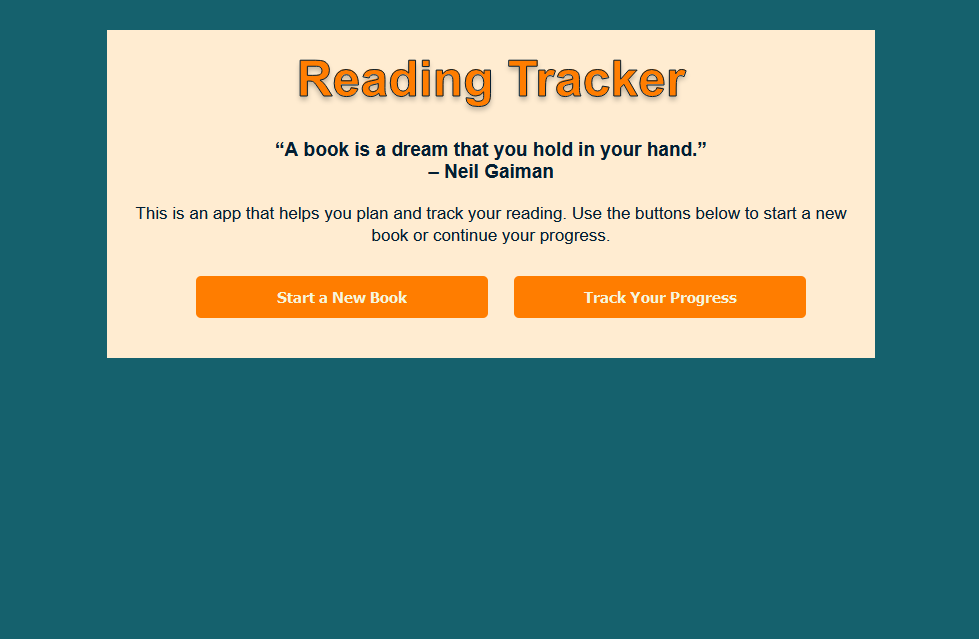
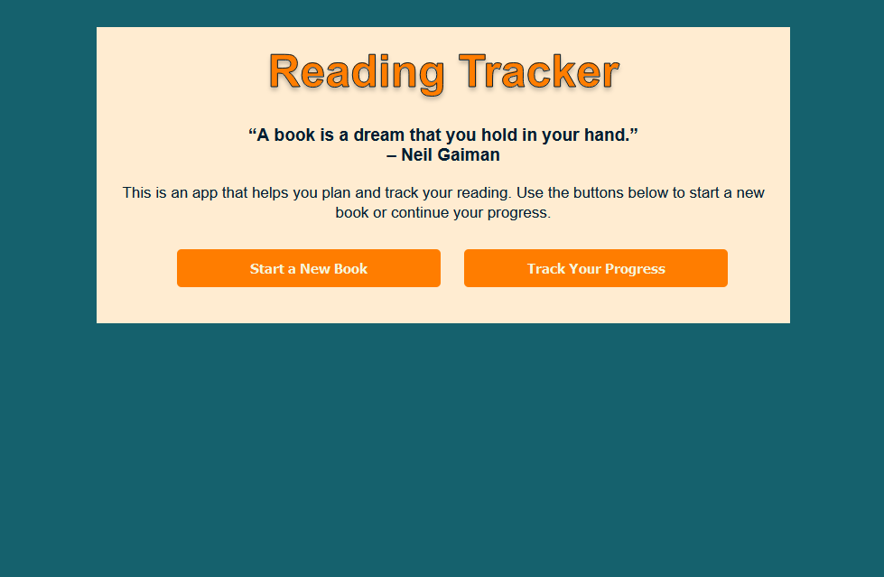

My Portfolio
This is some project I have been working on.
Click on one to read more!

 

My personal webpage

What was the brief?
The brief was to create a personal text-based webpage with the help of HTML and CSS. Side quest was to include an image or background patter, video, sound etc. Also to add a subpage from the main page.
What did I learned?
I have learned a lot about buttons and links during this project. Also worked a lot with positioning, playing with grid and float property and position property.
Revers Psychology game

What was the brief?
The brief was to make an interactive page using JavaScript, HTML and CSS. We had several options to choose from, but I decided to create a game. The plan was to create a Tic-tac-toe but I knew nothing about JavaScript, and after a week had gone I felt like I hade learned nothing and had so long way left to go, not only in JS but also with CSS and HTML. I felt like all I could create was a button. And from that thought, this Revers Psychology game came to life.
What did I learned?
I have learned how to make an object move randomly within a container with the help of JavaScript. I also made a timer to go down and to check conditions that executes code if certain requirements are met. It was really fun and also encouraging that I created it all from my own thought and what I had learned the passed days.
Reading tracker
What was the brief?
This was a group project, and the brief was to build a habit tracker using vanilla JavaScript. The goal was to learn how to organize projects and break down tasks, Learn how to work with code in groups, and finally learn how to work with git.
What did I learned?
I have learned a lot this brief! I learned about how GitHub works, both in the browser, in the command prompt, GitHub app and also in VS code! I find it a very useful tool and interesting to work with. I also understood more how working with the same code in a group works, which was an eye opening because it's kind of a question mark before this brief.
My personal webpage
What was the brief?
Here is some text regarding what I have learned during my first project. I know that this is not good to write in the HTML but right now this is what I know. I don't have a database and I missed the LocalStorage learning really, so this is what I can accomplish in this short time. Just writing some mote text to see where it goes yes its filling up.
What did I learned?
I have learned a lot about buttons and links during this project. Also worked a lot with positioning, playing with grid and float property and position property